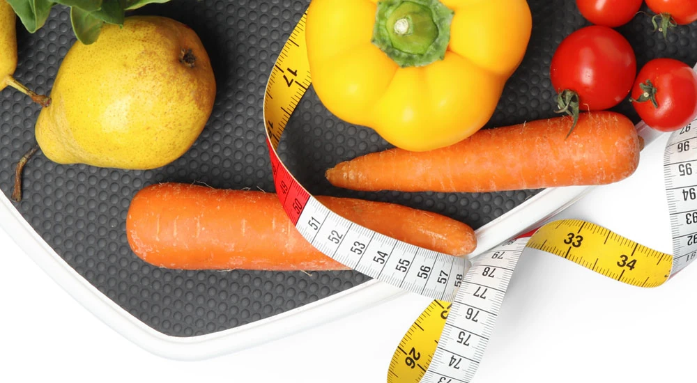

Stoffwechsel ankurbeln und beschleunigen: alles, was du darüber wissen musst

In diesem Artikel erfährst du alles Wichtige über deinen Stoffwechsel und wie du ihn ankurbeln und beschleunigen kannst. Du lernst die Grundlagen des Stoffwechsels kennen, die Rolle von Ernährung, Sport und Schlaf sowie effektive Methoden, um deinen Stoffwechsel anregen zu können und wie du deinen langsamen Stoffwechsel wieder auf Trab bringst.
Ich und mein Team haben in unserer Tätigkeit als unabhängige FitLine Berater täglich mit Menschen zu tun, die sich fragen, wie sie ihren Stoffwechsel optimieren können. Z. B., weil sie ihre Figur verbessern wollen und sich für unser Programm zum Abnehmen interessieren. Lass uns gemeinsam auf eine Reise gehen, die dir nicht nur wertvolle Tipps liefert, sondern auch das Potenzial hat, dein Level von Fitness und verbessern!
Wie gut kennst du deinen Stoffwechsel und seine Bedeutung? Und weißt du, was alles auf deinen Stoffwechsel Einfluss hat? Erfahre alles, was du darüber wissen musst.
Was ist der Stoffwechsel?
Der Stoffwechsel ist ein lebenswichtiger Prozess, der alle chemischen Reaktionen im Körper umfasst, die für das Überleben notwendig sind.
Diese Reaktionen sind entscheidend für die Umwandlung von Nahrungsmitteln in Energie, die unser Körper benötigt, um zu funktionieren.
Der Stoffwechsel ist nicht nur für die Energieproduktion verantwortlich, sondern auch für die Synthese von Substanzen, die für das Wachstum und die Reparatur von Zellen unerlässlich sind. Ein gut funktionierender Stoffwechsel sorgt dafür, dass wir uns vital und energiegeladen fühlen, unsere körperlichen Funktionen optimal ablaufen, aber eben auch, wie gut z. B. Verletzungen heilen, sich die Haut erneuert, und damit auch, wie schnell Alterungsprozesse ablaufen.
Katabolismus und Anabolismus
Um den Stoffwechsel besser zu verstehen, ist es wichtig, zwischen den verschiedenen Prozessen zu unterscheiden, die darin involviert sind.
Der Stoffwechsel kann grob in zwei Hauptkategorien unterteilt werden: in den Katabolismus und den Anabolismus.
Der Katabolismus bezieht sich auf den Abbau von Molekülen zur Energiegewinnung, während der Anabolismus den Aufbau komplexer Moleküle aus einfacheren Bausteinen umfasst.
Diese beiden Prozesse arbeiten Hand in Hand, um das Gleichgewicht im Körper aufrechtzuerhalten und die notwendigen Ressourcen für das tägliche Leben bereitzustellen.
Der Katabolismus ist der Prozess, bei dem Nährstoffe wie Kohlenhydrate, Fette und Proteine abgebaut werden, um Energie in Form von ATP (Adenosintriphosphat) zu erzeugen. Diese Energie wird dann für verschiedene Körperfunktionen genutzt, wie zum Beispiel für Bewegung, Atmung und Zellreparatur.
Auf der anderen Seite steht der Anabolismus, bei dem der Körper Energie verwendet, um neue Zellen, Gewebe und Moleküle aufzubauen. Beide Prozesse sind essenziell für das Wachstum, die Entwicklung und die Aufrechterhaltung der Gesundheit.
Faktoren, die den Stoffwechsel beeinflussen
Verschiedene Faktoren wie Alter, Geschlecht, genetische Veranlagung und Lebensstil spielen eine entscheidende Rolle im Stoffwechsel.
Mit zunehmendem Alter verlangsamt sich der Stoffwechsel in der Regel, was oft zu einer Gewichtszunahme führt.
Auch das Geschlecht kann Einfluss auf den Grundumsatz haben; Männer haben tendenziell einen höheren Grundumsatz als Frauen aufgrund eines größeren Muskelanteils.
Genetische Faktoren können ebenfalls bestimmen, wie effizient unser Körper Nährstoffe verarbeitet und Kalorien verbrennt.
Ein weiterer wichtiger Aspekt sind Lebensstilfaktoren wie Ernährung und körperliche Aktivität.
Eine ausgewogene Ernährung mit ausreichend Nährstoffen kann den Stoffwechsel anregen, während Bewegungsmangel und suboptimale Ernährung zu einer Verlangsamung führen kann.
Zudem können Stress und Schlafmangel negative Auswirkungen auf den Stoffwechsel haben. Stress führt oft auch zu ungesunden Essgewohnheiten, und Schlafmangel kann die Hormone beeinflussen, die für den Stoffwechsel verantwortlich sind.
Ein beschleunigter Stoffwechsel kann zahlreiche Vorteile mit sich bringen, darunter Gewichtsverlust und verbesserte Energielevels.
Unterstützung und Beschleunigung: Methoden, um deinen Stoffwechsel zu beschleunigen
Um deinen Stoffwechsel effektiv zu unterstützen, ist es entscheidend, die richtige Balance zwischen Ernährung, Bewegung und Erholung zu finden.
Lass uns die verschiedenen Aspekte einmal genauer anschauen:
1. Eine optimale Ernährung und Nährstoffaufnahme zum Ankurbeln
Eine bewusste Nahrungsaufnahme, die reich an Ballaststoffen, Proteinen und gesunden Fetten ist, kann nicht nur deinen Energieverbrauch steigern, sondern auch das Sättigungsgefühl fördern. Um deinen Stoffwechsel effektiv zu beschleunigen, solltest du auf bestimmte Lebensmittel setzen, die den Kalorienverbrauch erhöhen und die Fettverbrennung anregen.
Welche Lebensmittel essen?
Lebensmittel wie Vollkornprodukte, mageres Fleisch, Fisch, Nüsse, gesunde Fettsäuren und frisches Obst und Gemüse sollten Teil deiner täglichen Ernährung sein.
Lebensmittel mit einem hohen Gehalt an Proteinen sind besonders vorteilhaft in deiner Nahrung, da sie mehr Energie für die Verdauung benötigen als Fette oder Kohlenhydrate. Das bedeutet, dass dein Körper beim Verzehr von proteinreichen Lebensmitteln mehr Kalorien verbrennt. Gute Quellen für Proteine sind mageres Fleisch, Fisch, Hülsenfrüchte und Milchprodukte.
Beachte außerdem, dass dein Stoffwechsel auf gute Fette angewiesen ist. Nutze Öle und Lebensmittel, die reich an Omega-3-Fettsäuren sind, und wechsle verschiedene Öle in deiner Ernährung ab. Ich verwende z. B. Olivenöl, Leinöl und Kokosöl häufig. Wichtig: natürlich immer in bester und unbehandelter Qualität.
Darüber hinaus sollten auch ballaststoffreiche Lebensmittel wie Vollkornprodukte, Obst und Gemüse eine wichtige Rolle in deiner Ernährung spielen. Diese Nahrungsmittel fördern nicht nur die Verdauung, sondern sorgen auch dafür, dass du dich länger satt fühlst.
Das bewusste Meiden von raffinierten Zuckerarten und stark verarbeiteten Lebensmitteln sowie die Reduzierung von hohen Kohlenhydraten zur richtigen Tageszeit können helfen, den Blutzuckerspiegel stabil zu halten und die Energie langfristig aufrechtzuerhalten.
Bedeutsam ist auch, die Frische und Qualität der Lebensmittel zu priorisieren, die du konsumierst. Hochwertige, unverarbeitete Nahrungsmittel liefern nicht nur essentielle Nährstoffe, sondern fördern auch eine bessere Verdauung und Nährstoffaufnahme. Biologisches Obst und Gemüse sowie hochwertige Proteine aus nachhaltigen Quellen können deinem Körper helfen, effizienter zu funktionieren.
Achte darauf, dass jede Mahlzeit eine ausgewogene Kombination aus Proteinen, gesunden Fetten und komplexen Kohlenhydraten enthält. Dies sorgt nicht nur für eine langanhaltende Sättigung, sondern stabilisiert auch den Blutzuckerspiegel, was für einen konstanten Energiespiegel entscheidend ist.
Zudem solltest du beim Kochen auf gesunde Zubereitungsmethoden setzen, wie Dämpfen oder Grillen, um die Nährstoffe bestmöglich zu erhalten.
Die Auswahl von saisonalen Produkten kann ebenfalls einen positiven Einfluss haben, da diese oft nährstoffreicher sind und weniger chemische Zusätze enthalten.
Wenn du darüber hinaus darauf achtest, regelmäßig neue Rezepte auszuprobieren und Abwechslung in deinen Speiseplan zu bringen, sorgst du nicht nur für eine abwechslungsreiche Ernährung, sondern unterstützt auch deinen Stoffwechsel durch unterschiedliche Nährstoffprofile.
Regelmäßig und in Ruhe essen
Ein wichtiger Aspekt ist auch das Timing der Mahlzeiten; es hat sich gezeigt, dass regelmäßige Essensintervalle den Stoffwechsel ankurbeln können.
Die Bedeutung des regelmäßigen Essens für den Stoffwechsel wir meist unterschätzt. Viele Menschen neigen dazu, Mahlzeiten auszulassen, in der Annahme, dass dies zu einem schnelleren Gewichtsverlust führt.
In Wirklichkeit kann dies jedoch kontraproduktiv sein. Unregelmäßige Essgewohnheiten können den Stoffwechsel destabilisieren, da der Körper in einen Sparmodus wechselt, wenn er glaubt, weniger Nahrung zu erhalten.
Stattdessen ist es vorteilhafter, kleinere, häufigere Mahlzeiten zu konsumieren, um den Energieverbrauch anzuregen und den Blutzuckerspiegel stabil zu halten. Darüber hinaus fördert eine gut planbare Ernährung die Aufnahme aller notwendigen Nährstoffe und unterstützt insgesamt das Wohlbefinden. Eine bewusste Auswahl an nährstoffreichen Lebensmitteln verbunden mit einer abgestimmten Essensfrequenz kann nicht nur den Stoffwechsel fördern, sondern auch langfristig zu einem gesünderen Lebensstil beitragen.
Die Achtsamkeit beim Essen ist ebenfalls von großer Bedeutung. Indem du dir Zeit nimmst und deine Mahlzeiten bewusst genießt, kannst du ein besseres Gespür für Hunger- und Sättigungszeichen entwickeln. Dies reduziert nicht nur das Risiko von übermäßigem Essen, sondern fördert auch eine gesunde Beziehung zur Nahrung.
Außerdem kann Intervallfasten eine effektive Methode sein, um den Stoffwechsel herauszufordern und zu optimieren. Diese Praxis erfordert eine bewusste Planung der Mahlzeiten und bietet dem Körper gleichzeitig Phasen der Ruhe von der Verdauung, wodurch die Energie effizienter genutzt werden kann.
Dein Körper braucht alle wichtigen Mikronährstoffe
Ein weiterer wichtiger Punkt, den du in Betracht ziehen solltest, ist die Rolle der Mikronährstoffe, insbesondere der Vitamine und Mineralstoffe, die dein Stoffwechsel benötigt.
Viele Menschen sind sich nicht bewusst, dass diese Nährstoffe entscheidend für zahlreiche biochemische Prozesse im Körper sind, die z. B. den Energiehaushalt* und auch den Fettstoffwechsel¹ beeinflussen. (*Thiamin, Riboflavin, Biotin, Niacin und Pantothensäure tragen zu einem normalen Energiestoffwechsel bei.)
Eine abwechslungsreiche Ernährung, die reich an Obst, Gemüse, Nüssen und Samen ist, versorgt deinen Körper mit den notwendigen Mikronährstoffen.
Es kann auch hilfreich sein, regelmäßig deine Nährstoffaufnahme zu überprüfen und zu reflektieren, und gegebenenfalls Ergänzungen zu erwägen, um sicherzustellen, dass du alle benötigten Vitamine und Mineralstoffe in ausreichenden Mengen erhältst. Wenn du an einer umfassenden Nährstoffzufuhr über Nahrungsergänzung interessiert bist, schau dir gern einmal unser Optimal-Set an.
Indem du auf die Qualität deiner Lebensmittel achtest und bewusst die Nährstoffdichte erhöhst, schaffst du eine solide Basis für eine effektive Energieverwertung im Körper.
2. Flüssigkeitszufuhr: trinke ausreichend Wasser
Die Hydration spielt eine wesentliche Rolle für einen optimalen Stoffwechsel. Genügend Wasser zu trinken sorgt dafür, dass die Stoffwechselprozesse reibungslos ablaufen können!
Studien haben gezeigt, dass eine ausreichende Flüssigkeitszufuhr den Grundumsatz steigern kann, bzw. dass Wassermangel eine Wechselwirkung zu Übergewicht und Problemen beim Abnehmen hat.
Wasser spielt eine entscheidende Rolle bei verschiedenen physiologischen Prozessen, einschließlich der Verdauung, der Nährstoffaufnahme und der Regulierung der Körpertemperatur.
Eine genügende Flüssigkeitszufuhr unterstützt nicht nur die Effizienz des Stoffwechsels, sondern hilft auch, den Hunger zu regulieren.
Oft wird Durst mit Hunger verwechselt, was zu übermäßigem Essen führen kann. Es ist ratsam, den Tag über regelmäßig Wasser zu konsumieren und gegebenenfalls verschiedene Tees oder andere kalorienfreie Getränke hinzuzufügen, um die Flüssigkeitsaufnahme zu erhöhen.
Eine ausreichende Hydratation kann zudem die körperliche Leistungsfähigkeit steigern und die Konzentrationsfähigkeit verbessern, was sich positiv auf den Alltag auswirkt.
Darüber hinaus gibt es Hinweise darauf, dass das Trinken von kaltem Wasser kurzfristig den Kalorienverbrauch ankurbeln kann, da der Körper Energie aufwenden muss, um das Wasser auf Körpertemperatur zu bringen.
Wasser hilft dabei, Nährstoffe zu transportieren, die Körpertemperatur zu regulieren und entzündliche Prozesse zu minimieren. Zudem kann eine ausreichende Flüssigkeitszufuhr dazu beitragen, ein Gefühl der Sättigung zu fördern und somit übermäßiges Essen zu verhindern.
Einige Forschungsergebnisse legen nahe, dass der Konsum von Wasser vor einer Mahlzeit den Kalorienverbrauch erhöhen kann, was eine einfache und effektive Strategie zur Unterstützung des Stoffwechsels darstellt.
Es ist hilfreich, den Tag mit einem Glas Wasser zu beginnen und während des Tages regelmäßig kleine Mengen zu trinken, um hydratisiert zu bleiben. So schaffen wir die besten Voraussetzungen für einen aktiven Stoffwechsel.
Indem du ein Bewusstsein für deine Flüssigkeitszufuhr entwickelst und darauf achtest, genug zu trinken, legst du einen weiteren Baustein für einen optimalen Stoffwechsel und ein gesteigertes allgemeines Wohlbefinden.
PS: Trinken ist eine Gewohnheit. Dein Körper passt sich an eine suboptimale Versorgung an und reduziert das Durstgefühl. Wenn du anfängst, wieder mehr zu trinken, kommt dein natürliches Durstgefühl zurück und es wird dir auch nicht mehr schwerfallen, ausreichend zu trinken.
3. Bewegung und Sport
Körperliche Aktivität ist ein weiterer entscheidender Faktor, der den Stoffwechsel in Gang hält. Regelmäßige körperliche Aktivität hat nachweislich einen positiven Einfluss auf den Stoffwechsel. Sportliche Betätigung erhöht nicht nur die Kalorienverbrennung während des Trainings, sondern trägt auch dazu bei, den Grundumsatz langfristig zu steigern. Intensivere Workouts, insbesondere Krafttraining und Intervalltraining wie HIIT, können deine Muskelmasse erhöhen und damit deinen Grundumsatz steigern.
Muskelgewebe benötigt mehr Energie im Ruhezustand als Fettgewebe, was bedeutet, dass ein höherer Anteil an Muskelmasse deinem Körper hilft, Kalorien effektiver zu verbrennen.
Insgesamt ist es empfehlenswert, sowohl Ausdauer- als auch Krafttraining in deinen Alltag zu integrieren. Ausdauertraining wie Laufen oder Radfahren hilft dabei, Fett zu verbrennen und die allgemeine Fitness zu verbessern. Krafttraining hingegen fördert den Muskelaufbau; da Muskeln mehr Energie benötigen als Fettgewebe, führt ein höherer Muskelanteil zu einem erhöhten Kalorienverbrauch im Ruhezustand.
Zudem wirkt Bewegung nicht nur physisch stimulierend, sondern auch positiv auf dein mentales Wohlbefinden, indem sie Stress reduziert und die Schlafqualität verbessert. Das sind zwei weitere Faktoren, die eng mit einem optimalen Stoffwechsel verbunden sind.
Menschen, die regelmäßig Sport treiben, berichten oft von einer deutlich besseren Schlafqualität und einer gesteigerten Energiebilanz über den Tag hinweg. Daher ist es wichtig, eine ausgewogene Routine zu entwickeln, in der Bewegung einen festen Platz einnimmt. Schon kleine Änderungen wie mehr Treppensteigen oder das Integrieren von Spaziergängen in den Alltag können einen Unterschied machen und deine Vitalität spürbar verbessern.
4. Die Bedeutung des Schlafs für den Stoffwechsel
Schließlich solltest du auch die Bedeutung des Schlafes nicht unterschätzen. Ausreichender und erholsamer Schlaf sorgt dafür, dass Hormone wie Leptin und Ghrelin im Gleichgewicht bleiben, welche beide für das Hunger- und Sättigungsgefühl wichtig sind.
Ein gestörter Schlaf kann nicht nur zu Heißhungerattacken führen, sondern auch den gesamten Stoffwechsel beeinträchtigen. Daher ist es ratsam, einen regelmäßigen Schlafrhythmus einzuführen und stressfördernde Elemente vor dem Zubettgehen zu vermeiden.
Schlafmangel hat nicht nur negative Auswirkungen auf die körperliche und geistige Gesundheit, sondern beeinträchtigt auch das hormonelle Gleichgewicht, das für die Regulierung des Stoffwechsels entscheidend ist.
Chronische Schlaflosigkeit kann zu einer Überproduktion von Stresshormonen führen, die den Appetit und die Fettablagerung negativ beeinflussen können.
Studien haben gezeigt, dass Menschen, die weniger als sieben Stunden Schlaf pro Nacht bekommen, ein höheres Risiko für Gewichtszunahme und Stoffwechselerkrankungen aufweisen.
Um die Regeneration des Körpers zu fördern und den Stoffwechsel zu unterstützen, ist es wichtig, eine regelmäßige Schlafroutine zu etablieren. Durch das Schaffen einer ruhigen Schlafumgebung und das Vermeiden von Bildschirmen oder stimulierenden Substanzen vor dem Zubettgehen kann der Schlaf verbessert werden.
Darüber hinaus spielt auch die Qualität des Schlafes eine entscheidende Rolle; tiefer und ununterbrochener Schlaf fördert die Ausschüttung von Wachstumshormonen und hilft dem Körper, sich zu regenerieren und Energie zu verbrauchen.
Es ist ratsam, verstärkt auf deine innere Uhr zu hören und den Biorhythmus zu respektieren, was nicht nur deinen Schlaf fördert, sondern auch den natürlichen Stoffwechselprozess deines Körpers unterstützt. Ein stabiler Tag-Nacht-Rhythmus sorgt dafür, dass essentielle Reparaturmechanismen im Körper optimal ablaufen und letztendlich zu einer besseren Energieverwertung führen.
Indem du deine Schlafgewohnheiten bewusster gestaltest, legst du somit einen weiteren Grundstein für ein effektives Metabolismus-Management und ein gesteigertes Wohlbefinden in allen Lebensbereichen.
5. Stress, Stressmanagement und Psyche
Ein weiterer wichtiger Gesichtspunkt, der oft nicht ausreichend beachtet wird, ist der Einfluss von Stress auf den Stoffwechsel.
Stress und emotionale Belastungen können erhebliche Auswirkungen auf das Essverhalten und die gesamte Stoffwechselrate haben. Chronischer Stress führt zu einer erhöhten Ausschüttung von Cortisol, einem Hormon, das in hohen Mengen den Appetit steigern und die Fettspeicherung begünstigen kann.
Diese negative Wirkung kann den Fortschritt bei der Gewichtsreduktion erheblich behindern und das Risiko von Stoffwechselstörungen erhöhen.
Daher ist es entscheidend, effektive Strategien zur Stressbewältigung zu implementieren. Methoden wie Yoga, Meditation oder regelmäßige Bewegung können nicht nur helfen, Stress abzubauen, sondern auch das allgemeine Wohlbefinden zu steigern.
Techniken wie Achtsamkeit, Atemübungen, Meditation, Yoga oder auch einfach nur Zeit in der Natur zu verbringen, können helfen, den Geist zu beruhigen und innere Ausgeglichenheit zu fördern. Sie helfen, den Stresspegel zu senken und fördern auch eine gesunde Beziehung zu Ernährung und Bewegung.
Das Erlernen von Entspannungstechniken kann dir helfen, impulsives Essen zu vermeiden und insgesamt achtsamer mit deinem Körper umzugehen. Diese Balance trägt dazu bei, deinen Stoffwechsel im Gleichgewicht zu halten und eine stabile Energieversorgung zu gewährleisten.
Ein entspannter Geist reagiert weniger empfindlich auf Stress und kann schneller regenerieren, was sich positiv auf den Stoffwechsel und die allgemeine Körperfunktion auswirkt.
Das Pflegen sozialer Kontakte, das Teilen von Erlebnissen oder das Suchen nach Unterstützung in schwierigen Zeiten sind ebenfalls wichtige Bausteine für die emotionale Gesundheit.
Eine starke soziale Unterstützung fördert das Glücksgefühl und kann ebenso dazu beitragen, gute Verhaltensweisen aufrechtzuerhalten.
Achte darauf, Momente der Freude in deinen Alltag zu integrieren , sei es durch neue Hobbys, kreative Aktivitäten oder das Eintauchen in kulturelle Erlebnisse. Indem du dich regelmäßig mit positiven Erfahrungen umgibst, stärkst du nicht nur deine Resilienz gegenüber Herausforderungen, sondern schaffst auch eine solide Basis für einen gesunden Lebensstil insgesamt.
Den Wert von Hobbys für ein erfülltes Leben sollte man nicht unterschätzen; Aktivitäten, die Freude bereiten und kreativ inszeniert werden, fördern nicht nur die emotionale Stabilität, sondern stärken auch soziale Beziehungen. Sei es Malen, Musizieren oder das Ausüben eines Handwerks… diese Beschäftigungen wirken oft beruhigend und tragen zur Selbstverwirklichung bei. Indem du dir regelmäßig Zeit für persönliche Interessen nimmst, schaffst du einen perfekten Ausgleich zum Alltag und legst somit einen Grundstein für ein harmonisches Inneres.
In dieser holistischen Betrachtung wird deutlich, dass körperliche Aktivität, gesunde Ernährung und emotionale Stabilität eng miteinander verknüpft sind und gemeinsam einen Weg zu einem erfüllten Leben ebnen.
Zusätzlich spielt die Bedeutung von Pausen und Regeneration eine wesentliche Rolle für das allgemeine Wohlbefinden und die Leistungsfähigkeit. In einer Welt, die oft von hektischen Abläufen und permanentem Zeitdruck geprägt ist, wird das gezielte Einplanen von Ruhephasen häufig vernachlässigt. Dabei ist es entscheidend, den Körper regelmäßig Gelegenheit zur Erholung zu geben, um die geistige Klarheit und körperliche Vitalität zu fördern.
Ausreichende Schlafdauer und -qualität sind hierbei unverzichtbar, doch ebenso wichtig sind aktive Pausen während des Tages. Kurze Unterbrechungen von geistigen Arbeiten durch entspannende Aktivitäten wie Dehnen, Atemübungen oder einen kurzen Spaziergang im Freien können Wunder wirken.
Diese kleinen Auszeiten ermöglichen es dir, deine Konzentration zurückzugewinnen und einen klaren Kopf zu behalten. Auch die Integration von bewusst gestalteten entspannten Momenten in den Alltag kann helfen, Stress abzubauen und die Produktivität zu steigern. Zum Beispiel kann das Praktizieren von Achtsamkeitsübungen vor dem Arbeitstag oder in stressigen Situationen eine effektive Methode sein, um innerliche Ruhe zu finden und sich auf die wesentlichen Aufgaben zu fokussieren.
6. Nährstoffe, Pflanzenstoffe und mehr…
Ein weiterer zentraler Aspekt, den du berücksichtigen kannst, sind bestimmte Nährstoffe, Mikronährstoffe und Pflanzenstoffe, die deinen Stoffwechsel natürlich beschleunigen können.
Es gibt einige Stoffe, die nachweislich die Fettverbrennung ankurbeln und den Energieverbrauch steigern. Beispielsweise kann Grüner Tee Extrakt dank seiner Antioxidantien und seiner Fähigkeit, den thermogenen Prozess im Körper zu stimulieren, dazu beitragen, Kalorien auch in Ruhephasen effizienter zu verbrennen.
Auch bestimmte Aminosäuren, wie L-Carnitin, haben sich als hilfreich erwiesen, um den Fettstoffwechsel zu optimieren und die Leistungsfähigkeit während des Trainings zu steigern.
Darüber hinaus können Gewürze wie Cayennepfeffer oder Ingwer durch ihre thermogene Wirkung ebenfalls einen positiven Einfluss auf deinen Stoffwechsel ausüben.
Schauen wir uns einiges einmal genauer an:
Einige Pflanzenstoffe und Nahrungsergänzungsmittel
Um das Beste aus deinem Stoffwechsel herauszuholen, ist es von Bedeutung, auf die Rolle von Mikronährstoffen zu achten. Vitamine und Mineralien, wie B-Vitamine¹ oder Zink¹, sind essentielle Begleiter im Stoffwechsel und tragen dazu bei, dass der Körper Nährstoffe effizient nutzt.
Es gibt verschiedene, natürliche und hochinnovative Nahrungsergänzungsmittel, die helfen können, deinen Stoffwechsel zu unterstützen, z. B. unser TopShape¹ (¹Biotin trägt zu einem normalen Makronährstoffwechsel bei und Zink trägt zu einem normalen Fettsäurestoffwechsel bei.)
Grüner Tee
Eines der bekanntesten Pflanzenstoffe zur Unterstützung des Stoffwechsels ist Grüner Tee. Dieser enthält hohe Konzentrationen an Antioxidantien, insbesondere Catechine, die als wirksam bei der Fettverbrennung gelten. Studien haben gezeigt, dass der Konsum von grünem Tee den Grundumsatz steigern und die Fettoxidation fördern kann. Die Kombination aus Koffein und Catechinen sorgt dafür, dass dein Körper effizienter arbeitet. Um die Vorteile von grünem Tee optimal zu nutzen, solltest du täglich mehrere Tassen genießen oder auf hochwertige Extrakte zurückgreifen.
Capsaicin
Ein weiterer interessanter Stoff ist Capsaicin, das aus scharfen Paprikas gewonnen wird. Capsaicin hat thermogene Eigenschaften, was bedeutet, dass es die Körpertemperatur erhöht und somit mehr Kalorien verbrennt. Studien zeigen, dass der Verzehr von scharfen Lebensmitteln den Energieverbrauch steigern kann. Es gibt auch Hinweise darauf, dass Capsaicin das Sättigungsgefühl erhöht, was dazu beitragen kann, die Nahrungsaufnahme zu reduzieren. Wenn du also gerne scharf isst, kannst du dies als eine einfache Möglichkeit nutzen, deinen Stoffwechsel anzuregen.
L-Carnitin
L-Carnitin ist eine Aminosäureverbindung, die eine wichtige Rolle im Fettstoffwechsel spielt. Es hilft dabei, Fettsäuren in die Mitochondrien der Zellen zu transportieren, wo sie in Energie umgewandelt werden können. Einige Studien legen nahe, dass L-Carnitin die Fettverbrennung während des Trainings erhöhen kann. Für Menschen, die regelmäßig Sport treiben und ihren Stoffwechsel ankurbeln möchten, könnte L-Carnitin eine wertvolle Ergänzung sein. Es ist jedoch wichtig zu beachten, dass es am effektivsten in Kombination mit einer ausgewogenen Ernährung und regelmäßigem Training wirkt.
Milchsäurebakterien
Die in deinem Darm lebenden Bakterien spielen eine entscheidende Rolle bei der Verdauung und der Nährstoffaufnahme von dem, was du isst. Fermentierte Lebensmittel wie Joghurt, Kefir oder Sauerkraut können dazu beitragen, ein optimales Mikrobiom in deinem Darm zu erhalten und zu fördern.
Warum ist es wichtig, den Stoffwechsel zu beschleunigen?
Ein beschleunigter Stoffwechsel kann zahlreiche Vorteile mit sich bringen, darunter Gewichtsverlust, bzw. ein normales Gewicht, und verbesserte Energielevels.
Wenn du deinen Stoffwechsel ankurbeln möchtest, ist es wichtig zu verstehen, wie sich dieser Prozess auf deinen Körper auswirkt und welche positiven Effekte du dadurch erzielen kannst.
Ein aktiver Stoffwechsel sorgt nicht nur dafür, dass du Kalorien effizienter verbrennst, sondern beeinflusst auch dein allgemeines Wohlbefinden.
Warum ist der Stoffwechsel überhaupt „zu langsam“?
Angemerkt sei, dass es natürlich ideal ist, wenn dein Stoffwechsel erst gar nicht beeinträchtigt wurde. Ich gehe davon aus, dass unser Stoffwechsel optimal arbeitet, wenn wir Kinder sind. Mit Ausnahme von genetischen Eigenheiten, die es natürlich gibt.
Jedoch entstehen Probleme mit dem Stoffwechsel in der Regel durch das, was wir über die Jahre mit unserem Körper tun:
- Schlechte Ernährung mit wenig Mikronährstoffen ruiniert unseren Körper und unseren Stoffwechsel. Denn zahlreiche Vitamine und Mineralien werden für das optimale Ablaufen von Stoffwechselprozessen benötigt. Wenn wir über Jahre viel nährstoffarme Nahrung wie Fastfood, Süßigkeiten und Weißmehlprodukte essen, brauchen wir uns nicht wundern, wenn unser Körper träge geworden ist, wir zu viel Gewicht angesammelt haben, uns müde und ausgelaugt fühlen und das Abnehmen nicht mehr richtig klappt.
- Die allermeisten Menschen trinken über Jahre zu wenig Wasser. Unser Körper passt sich an die Menge an Wasser und Nahrung an, die wir zuführen. Der Stoffwechsel stellt sich dann auf eine Notsituation (eine „Dürreperiode/Hungerperiode“) ein und verlangsamt oder stellt Stoffwechselprozesse ein, für die die Wassermenge nicht ausreicht. Es wird dann immer nur das Wichtigste fürs Überleben aufrechterhalten, was jedoch nichts mit dem Ideal zu tun hat.
- Häufige, falsche Diäten und Hungern gehören ebenfalls zu den Faktoren, die den Stoffwechsel ruinieren und verlangsamen. Der Körper ist nicht optimal versorgt, wodurch wieder negative Anpassungen entstehen und Muskeln abgebaut werden, wodurch der Grundumsatz sinkt, usw. Dies sind häufige Punkte, an denen viele Menschen in unserer Gesellschaft stehen: Sie haben zwar schon oft versucht abzunehmen, haben dies aber falsch gemacht, und bekommen dadurch immer mehr Gewicht und können immer schlechter abnehmen.
Vorteile eines beschleunigten Stoffwechsels
Ein schnellerer Stoffwechsel hat viele positive Auswirkungen.
Einer der offensichtlichsten Vorteile ist der Gewichtsverlust. Wenn dein Körper mehr Kalorien verbrennt, wird es einfacher, ein optimales Gewicht zu halten oder überschüssige Pfunde loszuwerden. Dies geschieht, weil ein aktiver Stoffwechsel die Fettverbrennung fördert und gleichzeitig die Speicherung von Fett reduziert.
Darüber hinaus kann ein schnellerer Stoffwechsel auch dazu beitragen, dass du dich energiegeladener fühlst. Wenn dein Körper effizienter arbeitet, hast du mehr Energie für alltägliche Aktivitäten und sportliche Betätigungen.
Ein weiterer Vorteil ist die Verbesserung der Körperzusammensetzung. Ein schneller Stoffwechsel fördert den Muskelaufbau und hilft dabei, das Verhältnis von Fett zu Muskelmasse zu optimieren. Dies ist besonders wichtig für Menschen, die ihre Fitness steigern und einen gesunden Lebensstil führen möchten.
Ein optimaler Stoffwechsel unterstützt zudem die Regulierung des Blutzuckerspiegels und kann das Risiko für chronische Erkrankungen wie Diabetes verringern.
Der Stoffwechsel hat nicht nur physische Auswirkungen, sondern beeinflusst auch unser emotionales Wohlbefinden.
Ein aktiver Stoffwechsel kann dazu beitragen, dass du dich besser fühlst und deine Stimmung stabil bleibt. Wenn dein Körper effizient Nährstoffe verarbeitet und Energie produziert, wird es einfacher, Stress abzubauen und positive Emotionen zu fördern.
Eine ausgewogene Ernährung in Kombination mit einem beschleunigten Stoffwechsel kann somit auch deine mentale Gesundheit unterstützen.
Häufige Mythen über den Stoffwechsel
Es gibt viele Missverständnisse über den Stoffwechsel, die es wert sind, aufgeklärt zu werden.
Diese Mythen können dazu führen, dass Menschen falsche Annahmen treffen und möglicherweise nicht die besten Entscheidungen treffen.
Mythen bei der Ernährung
Ein weit verbreiteter Irrglaube ist, dass man seinen Stoffwechsel durch bestimmte Diäten drastisch steigern kann. Viele glauben, dass extreme Diäten oder das Auslassen von Mahlzeiten den Stoffwechsel ankurbeln können. In Wirklichkeit führt eine unzureichende Nahrungsaufnahme oft zu einer Verlangsamung des Stoffwechsels.
Der Körper interpretiert das als Mangelernährung und passt sich an, indem er den Grundumsatz senkt, um Energie zu sparen. Es ist wichtig, regelmäßig ausgewogene Mahlzeiten zu sich zu nehmen, um den Stoffwechsel effizient am Laufen zu halten.
Ein weiterer Mythos besagt, dass bestimmte Lebensmittel allein den Stoffwechsel erheblich beschleunigen können. Während einige Nahrungsmittel wie scharfe Paprika oder grüner Tee tatsächlich einen kleinen positiven Einfluss auf die Fettverbrennung haben können, ist es entscheidend zu verstehen, dass kein einzelnes Lebensmittel die Lösung ist.
Der Schlüssel liegt in einer insgesamt optimalen Ernährung, die reich an Nährstoffen ist und eine Vielzahl von Lebensmitteln umfasst. Eine ausgewogene Zufuhr von Proteinen, Ballaststoffen und guten Fetten spielt eine viel wichtigere Rolle als das gelegentliche Essen eines „Wundermittels“.
Ein häufig gehörter Glaube ist auch, dass man mit zunehmendem Alter keine Möglichkeit mehr hat, seinen Stoffwechsel zu beeinflussen. Obwohl es stimmt, dass der Stoffwechsel mit dem Alter tendenziell schlechter läuft, bedeutet das nicht, dass man sich damit abfinden muss. Durch regelmäßige körperliche Aktivität und eine bewusste Ernährung kann jeder, unabhängig vom Alter, seinen Stoffwechsel unterstützen und sogar verbessern. Krafttraining kann beispielsweise helfen, Muskelmasse aufzubauen, was wiederum den Grundumsatz erhöht. Dies ist sogar im hohen Alter von z. B. 80 Jahren immer noch genauso gut möglich, wie in jüngeren Jahren.
Haben Männer einen besseren Stoffwechsel?
Ein weiterer weit verbreiteter Irrglaube ist die Vorstellung, dass Frauen einen weniger aktiven Stoffwechsel haben als Männer und daher weniger Kalorien verbrennen. Während es stimmt, dass Männer tendenziell einen höheren Grundumsatz haben, oft aufgrund eines größeren Muskelanteils, können Frauen durch gezielte Trainings- und Ernährungsstrategien ihren Stoffwechsel ebenfalls optimieren. Es ist wichtig, individuelle Unterschiede zu berücksichtigen und personalisierte Ansätze zu verfolgen.
Viele Menschen glauben fälschlicherweise, dass Nahrungsergänzungsmittel wie z. B. die FitLine Produkte allein ausreichen, um den Stoffwechsel zu beschleunigen und Gewicht zu verlieren. Während bestimmte Pflanzen wie Grüner Tee oder Capsaicin unterstützend wirken können, sind selbst solche Stoffe kein Ersatz für eine gesunde Ernährung und regelmäßige Bewegung. Ein ganzheitlicher Ansatz ist unerlässlich für nachhaltige Ergebnisse. Du wirst niemals einfach nur eine Kapsel oder Vitamine schlucken, und dadurch nachhaltig abnehmen und eine tolle Figur haben und behalten können!
Häufige Fragen und Antworten zum Stoffwechsel in Kürze
1. Welche 4 Stoffe beschleunigen den Stoffwechsel?
Es gibt verschiedene Stoffe, die den Stoffwechsel ankurbeln können. Zu den vier wichtigsten gehören:
- Koffein: Dieser natürliche Stoff findet sich in Kaffee, Tee und einigen Energydrinks. Koffein kann die Fettverbrennung steigern und die körperliche Leistungsfähigkeit verbessern.
- Grüner Tee: Er enthält Antioxidantien und Catechine, die den Stoffwechsel anregen und die Fettverbrennung fördern.
- Protein: Eine proteinreiche Ernährung kann den thermischen Effekt der Nahrung erhöhen, was bedeutet, dass dein Körper mehr Energie benötigt, um Protein zu verdauen und zu verarbeiten.
- Chili: Capsaicin, der aktive Bestandteil in scharfen Paprika, kann den Stoffwechsel anregen und die Fettverbrennung steigern.
2. Wie kann ich den Stoffwechsel extrem ankurbeln?
Extrem ankurbeln kann der Stoffwechsel durch regelmäßige körperliche Aktivität, insbesondere durch hochintensives Intervalltraining (HIIT). HIIT fördert nicht nur die Fettverbrennung während des Trainings, sondern auch danach, da dein Körper zusätzliche Energie benötigt, um sich zu erholen. Zudem spielen eine ausgewogene Ernährung und ausreichend Schlaf eine entscheidende Rolle.
3. Was ist der Booster Nummer eins?
Der Stoffwechsel-Booster Nummer eins ist wahrscheinlich eine Kombination aus Bewegung und einer proteinreichen Ernährung. Sportliche Aktivitäten wie Krafttraining und Ausdauersport steigern deinen Grundumsatz und sorgen dafür, dass du auch im Ruhezustand mehr Kalorien verbrennst. Proteinreiche Nahrungsmittel unterstützen diesen Prozess zusätzlich.
4. Wie optimiere ich am schnellsten meinen Stoffwechsel?
Um deinen Stoffwechsel schnell anzuregen, gibt es einige effektive Methoden:
- Regelmäßige Bewegung: Integriere sowohl Ausdauer- als auch Krafttraining in deinen Alltag.
- Hydration: Ausreichend Wasser trinken ist eine wichtige Grundlage.
- Kleine Mahlzeiten: Häufigeres Essen von kleinen Portionen kann helfen, den Stoffwechsel aktiv zu halten.
- Schlaf und Stressreduktion: Achte auf ausreichend Schlaf, denn ein guter Schlaf und niedrige Stresshormone sind wichtig für einen optimalen Stoffwechsel.